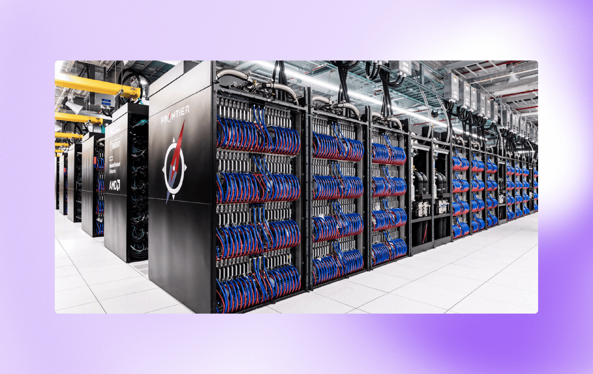

2023 год оказался богатым на рекордные изобретения. Компания HPE создала первый в мире экзафлопсный компьютер. Он способен проводить квинтиллион (то есть миллиард миллиардов) вычислительных операций за секунду. Это в 2,5 раза быстрее прошлого кандидата на звание суперкомпьютера — японского Fugaku.
Frontier расположен в Ок-Риджской национальной лаборатории и используется в научных целях: для моделирования галактик, прогнозирования климатических изменений, построения сложных молекулярных структур. Компьютер поможет учёным значительно ускорить математические расчёты и совершать важные для человечества открытия быстрее.
